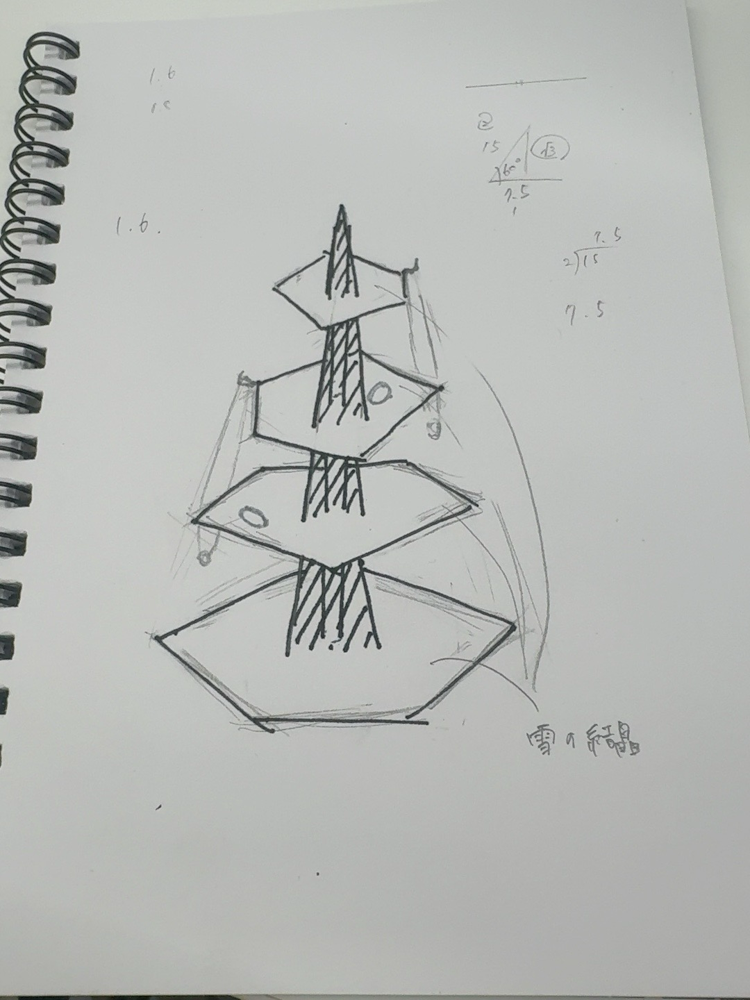
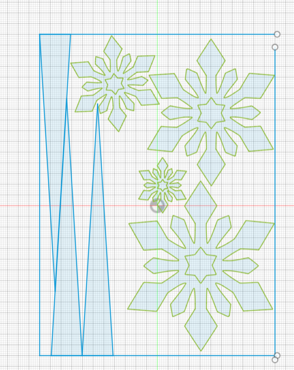
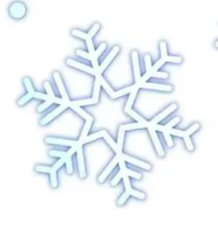
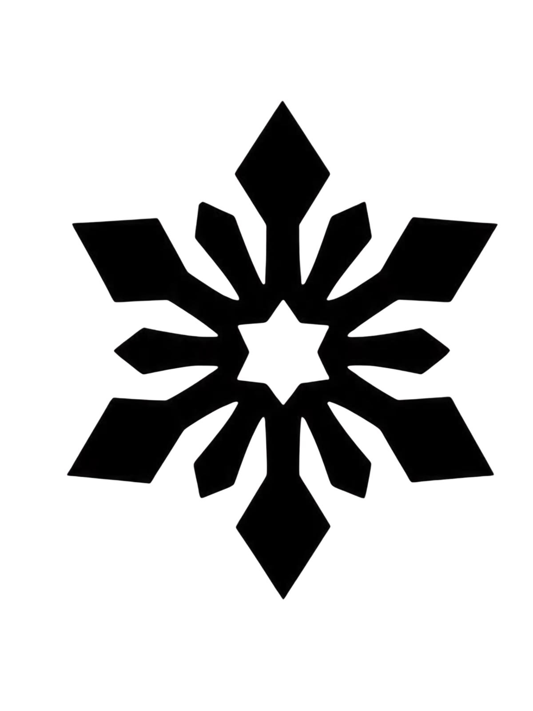

アクセサリーかけ
イメージスケッチ

完成品

雪の結晶の画像をPNGからSVGに変換し、fusion360に張り付けてデータを作成した。こちらのサイトから変換した。

この画像では、変換したときにはっきりと写らなかった。 調べたところ元画像が薄いことが原因だと分かった。
こちらの画像で再度実行したらはっきり反映された。まとめ
素材が木材だったためそれを生かした何かをつくりたいと思い、ツリー状のアクセサリーかけを制作した。
ネックレスをかけられるだけでなく、結晶部分にもリングやピアスなどの小物も置けるようにした。
結晶の一段目と二段目が近くなってしまい、作成前にサイズ確認の徹底をするべきだと感じた。